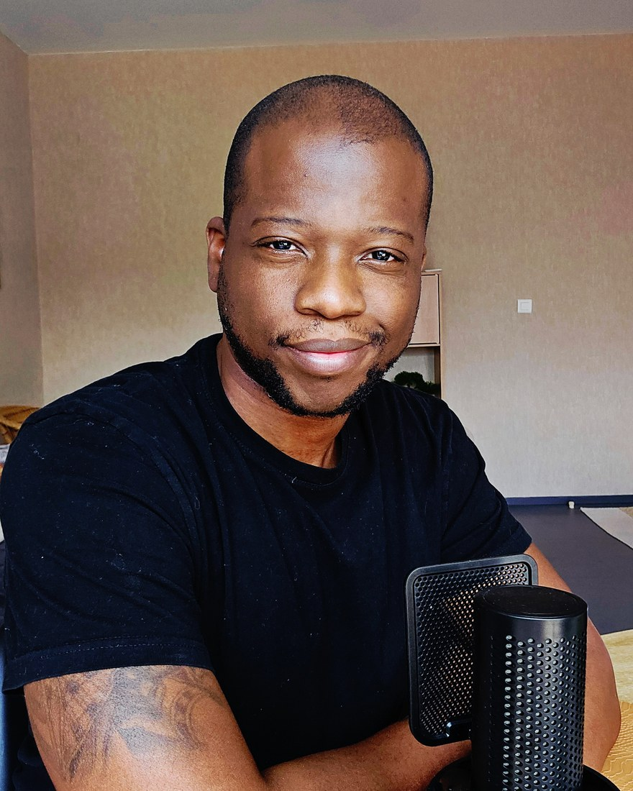

Ce n'est pas la motivation qui manque.
C'est ton système qui travaille contre toi.
En 60 jours, on en construit un qui te fait avancer même les jours
où tu n'as envie de rien.
Sois honnête, personne ne voit tes réponses.
Tu portes ce projet depuis des mois.
Tu sais exactement ce qu'il faudrait faire.
Et pourtant, rien ne bouge vraiment.
Tu as sûrement fini par te dire que tu manquais de discipline. C'est faux. De la discipline, tu en as — sinon tu n'aurais tenu ni ton travail, ni tes engagements, ni ta vie. Le problème, c'est que tu la dépenses dans un décor qui pousse en sens inverse. Chaque action doit être arrachée. Ça coûte une énergie folle. Et à ce jeu-là, le décor gagne toujours.
Un projet qui échoue, tu en apprends quelque chose. Un projet qui attend, tu n'en apprends rien. Il reste exactement là où tu l'as laissé — pendant que toi, tu vieillis avec. Six mois deviennent deux ans sans que rien ne se décide. C'est ça, le vrai coût : pas l'échec, les années où il ne se passe rien.
J'ai été caissier, téléconseiller, pâtissier, gestionnaire. À chaque fois je pensais que le problème c'était le métier, que le prochain serait le bon. Ce n'était pas le métier. C'était mon fonctionnement : je changeais de décor en gardant le même système, et je reproduisais exactement les mêmes résultats.
Le jour où j'ai arrêté de me demander « qu'est-ce que je dois faire ? » pour me demander « qu'est-ce qui m'empêche de le faire ? », tout a changé.
Je n'ai pas de méthode miracle. J'ai une méthode que j'applique sur moi depuis des années, sur des choses vérifiables.

Aucune de ces choses n'est venue d'un sursaut de volonté. Toutes sont venues d'un système : un déclencheur, un environnement modifié, une action rendue plus facile que son évitement. C'est exactement ce qu'on construira pour toi.
Cinq étapes, toujours dans cet ordre. Chacune conditionne la suivante — c'est ce qui évite de bâtir un système sur une base fausse.
Ton objectif est-il vraiment le tien, et jouable avec ton temps, ton argent et ton énergie réels ? Si non, on le réduit jusqu'à ce qu'il devienne vrai.
Ce qui bloque exactement : tu ne peux pas, tu ne sais pas, tu n'oses pas, ou tu ne veux pas vraiment. Une seule racine — et le besoin qu'elle protège.
Les gens, le lieu, les outils, l'organisation. On change deux ou trois choses pour que ton environnement arrête de te coûter de l'énergie.
Un enchaînement où chaque action déclenche la suivante. Les frictions retirées. Et la panne prévue à l'avance, pour la semaine où tu ne feras rien.
Trois indicateurs relevés à chaque séance. Tu ne me crois pas sur parole : tu regardes ta courbe.
Les écarts s'allongent volontairement. Sept jours ne testent rien — tu es encore porté par l'élan. Ce qui tient trois semaines sans moi, c'est un système.
Tu repars avec un objectif jouable et un premier geste de moins de 60 secondes, à faire dès le lendemain.
On descend jusqu'à la vraie cause, puis jusqu'au besoin qu'elle protège. On s'arrête quand tu dis « oui, c'est exactement ça ».
Deux ou trois changements physiques et vérifiables dans ton environnement.
On règle ton enchaînement avec cinq semaines de données réelles, et on prépare la panne.
On regarde ta courbe. Puis tu refais la méthode seul sur un autre objectif — c'est le vrai livrable.
Tu ouvres ton ordinateur sans négocier avec toi-même pendant vingt minutes. Tu termines une semaine à peu près comme tu l'avais prévue — pas parfaitement, mais assez pour que ça compte. Tu ne te demandes plus si tu vas t'y mettre : tu sais à quel moment ça se passe, et ça se passe.
Et le dimanche soir, quand tu regardes ta semaine, il s'est passé quelque chose. Pas un exploit. Quelque chose. Toutes les semaines.
J'ai beaucoup de travail à faire sur moi, que j'ai commencé depuis quelque temps déjà, mais c'est tellement enkysté. Merci d'être là pour moi. Tu as bien choisi ta voie.Vincent
Merci pour ton accompagnement. Je ne sais pas où j'en serais sans toi.Thérapeute · prénom modifié
Après 2h de discussion, j'ai eu tellement d'éclaircissement dans les limitations que je m'imposais. Toutes les choses qui ne marchaient pas n'étaient que le fruit de mes croyances mal placées. Merci de m'avoir aidé à mettre un doigt sur ça.Damien
Ce que ces témoignages ne disent pas encore. Les parcours 60 jours complets viennent de démarrer. Leurs résultats chiffrés apparaîtront ici quand ils seront terminés — pas avant. Les trois premières places sont celles qui écriront ces retours-là.
Selon où tu en es, il y a trois portes. Toutes commencent par le même échange — c'est là qu'on décide ensemble, pas avant.
On regarde ta situation. Tu repars avec un élément clair sur ce qui te bloque, que la suite se fasse ou non. Si je ne suis pas la bonne personne, je te le dis.
Réserver mon échange →Un diagnostic complet en une séance. Ton système actuel, la racine exacte du blocage, et ton plan des 30 prochains jours.
Faire mon diagnostic →Le parcours complet. On ne s'arrête pas au diagnostic : on construit le système, on l'installe, on le règle, et on vérifie qu'il tient sans moi. Garantie incluse.
Candidater →Personne ne peut te garantir un résultat, parce que personne ne peut exécuter à ta place. Quiconque te le promet te ment. Voici ce que je tiens.
Je n'accompagne que deux à trois personnes par mois.
Je lis chaque candidature moi-même et je réponds sous 72 heures. Si je ne suis pas la bonne personne pour ce que tu vis, je te le dirai.
Découvrir pourquoi je n'avance pas →